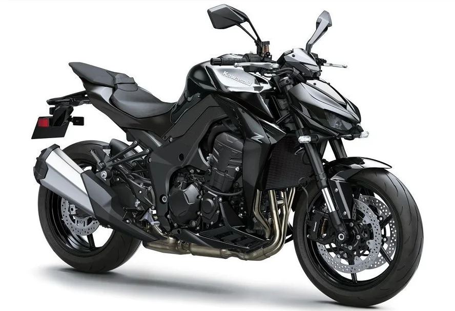
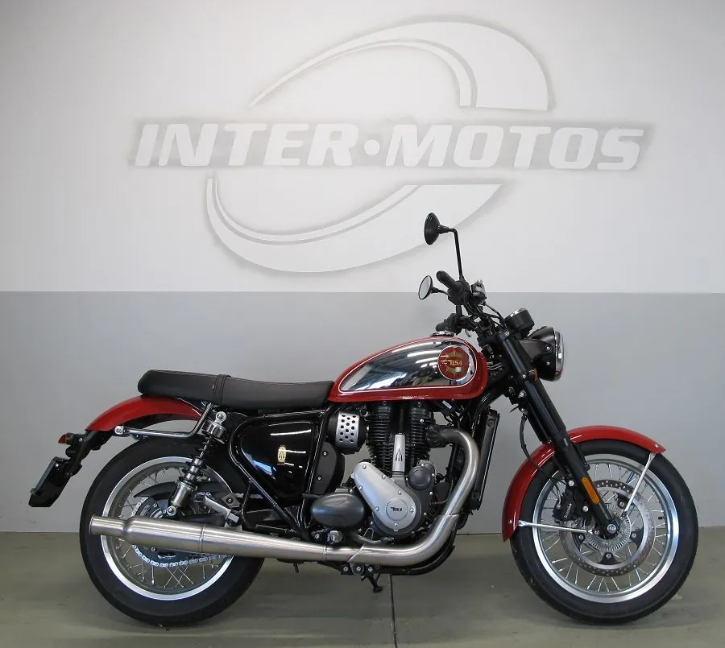
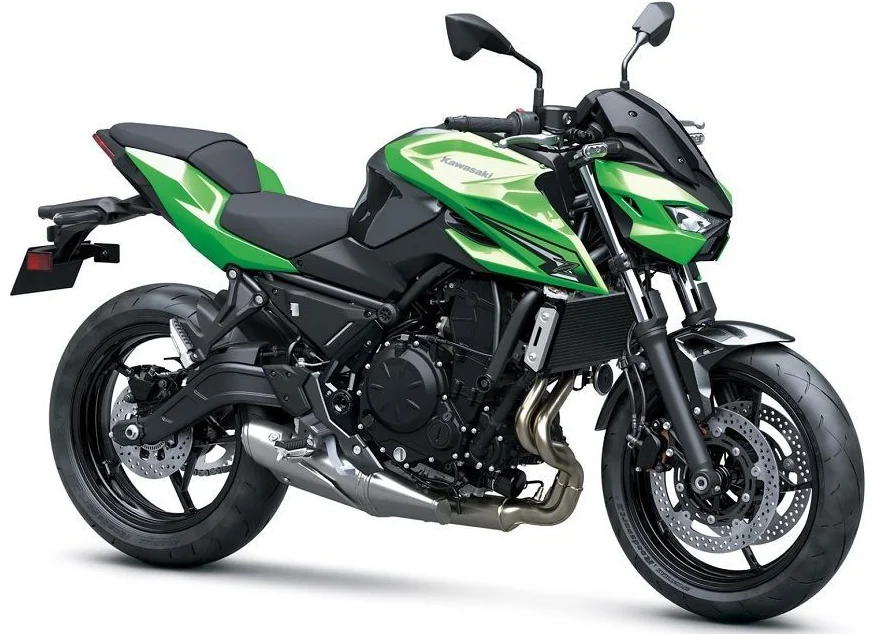
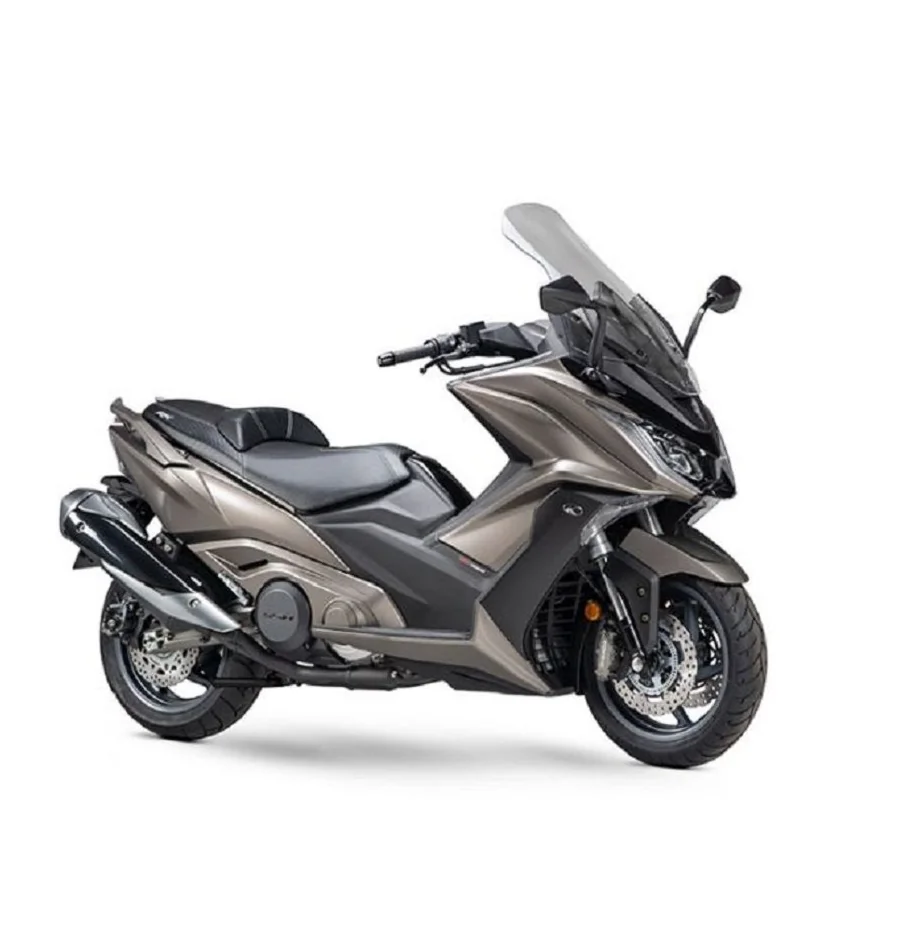
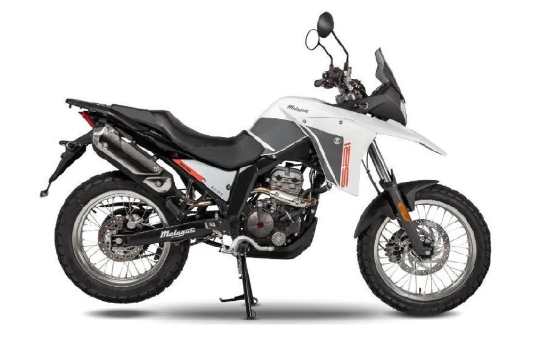
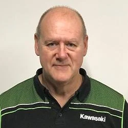
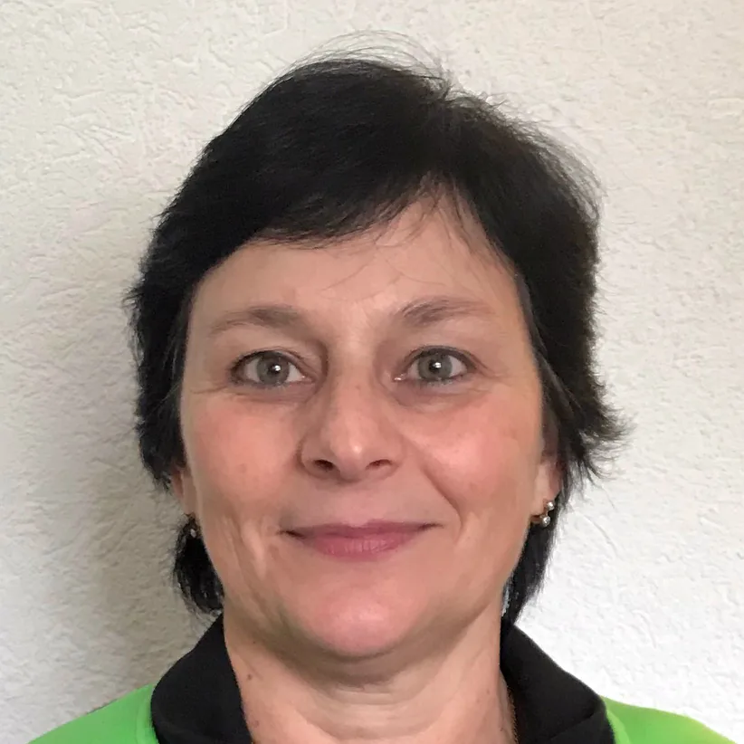
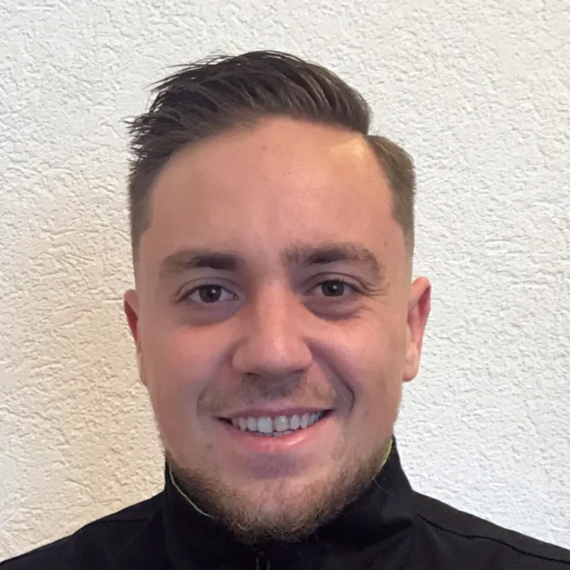

Kawasaki Z1100
Nouveauté 2026 de la gamme Kawasaki.
Toute la gamme Kawasaki est prête à l’essai.
Motos neuves et d’occasion, pièces, boutique du motard et atelier. Une maison fondée en 1959, qui se présente comme le plus ancien garage du canton de Vaud.

Toute la gamme Kawasaki et Kymco est disponible à l’essai. Voici quelques modèles présentés par le centre.

Nouveauté 2026 de la gamme Kawasaki.
Toute la gamme Kawasaki est prête à l’essai.

Roadster Kawasaki, à essayer au centre.
Une page dédiée présente aussi les modèles 35 kW.

Les scooters Kymco de 125 cm³ et plus sont garantis 5 ans ou 100 000 km.
Également au catalogue : Agility 300i et Downtown 350i.

Garantie 2 ans, comme les Malaguti Drakon 125 et Dune X 125.
Aussi : Beta RR 50 et 125 cm³, Hyosung 125 et 300 cm³, garantis 2 ans.
BSA, la légende est de retour : Legacy Edition, Midnight Black, Insignia Red, Shadow Black.
Un vaste choix d’occasions, toutes marques, un stock de pièces détachées et la boutique d’équipement du pilote. Motos de 125 cm³ dès 16 ans.
Un espace généreux, un agencement moderne et des collaborateurs qualifiés, régulièrement formés sur les derniers modèles. Outillage et équipements sont entretenus et remplacés régulièrement, pour pouvoir soigner les modèles les plus récents.
Du sang de moto coule dans nos veines : l’expérience, le savoir-faire et l’enthousiasme pour vos exigences.

François SedoLe Boss
Mercedes SedoComptabilité et administration
Francis RollinMécanicienMardi–vendredi : 7h30–12h00 et 13h00–18h00
Samedi : 8h00–16h00, non-stop
Mardi–vendredi : 8h00–12h00 et 13h00–18h00
Samedi : 9h00–16h00, non-stop
Mardi–vendredi : 9h00–12h00 et 13h00–17h00
Samedi : 9h00–16h00, non-stop
Fermé